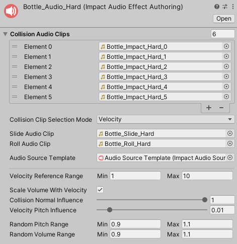
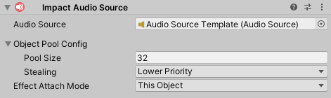
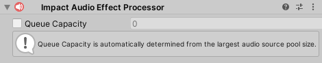

Audio Effect
Audio Effects are used to play sounds for collisions. You can create a new Audio Effect by going to .
Audio Effects can have a list of audio clips to play on collision. There are 2 modes that can be used to select the audio clips:
- Velocity – Base the output audio clip on the collision velocity. Audio clips should be sorted in order from lowest velocity to highest velocity.
- Random – Select a random audio clip from the list.
In addition to the collision audio clips, you can assign audio clips to Slide Audio and Roll Audio to use when the object is sliding or rolling. For best results, these sounds should be looped.
Finally, an Audio Source Template is required for actually playing the audio effect.
Audio Effects have the following additional properties:
- Velocity Reference Range – Collision velocities will be compared against this range for various calculations. If the collision velocity is less than the minimum value of the range, no effect will be played. When Scale Volume With Velocity is enabled, the volume will be determined based on this range. When Collision Clip Selection Mode is set to Velocity, this range will be used to determine which audio clip to play.
- Scale Volume With Velocity – If checked, the output volume will be multiplied based on the input velocity. The value to multiply by comes from the Volume Scale Curve.
- Collision Normal Influence – How much the input normal will effect the calculated intensity of the collision. This can be used so that grazing collisions will have a low volume even if they have a high velocity.
- Velocity Pitch Influence – Increases the pitch of sliding and rolling sounds based on the collision velocity, so higher velocities will have a higher pitch. Typically this should be a very low value.
- Random Pitch Range – A random multiplier for the output pitch.
- Random Volume Range – A random multiplier for the output volume.
- Effect ID – Controls how the ID for the effect is determined.
- Instance ID – Use the instance ID obtained from GetInstanceID()
- Object Name – Use the object's name to determine the ID. This is mainly useful if GetInstanceID() is too inconsistent for your needs. This requires that your asset names be unique to avoid duplicate IDs.
Audio Source Prefab
Audio Effects require a prefab with an Impact Audio Source component attached to it. You can add this component to an object by going to .
Impact Audio Sources have three properties:
- Audio Source – The audio source to use for playing sounds.
- Audio Fade Out Time – For sliding and rolling effects, how long the audio takes to fade out once sliding/rolling has stopped.
- Pool Size – The size of the object pool created for this audio source.
- Stealing – How the object pool should handle cases when you want to retreive an audio source, but all audio sources are in use.
- None – Do nothing and no sound will be played.
- Lower Priority – Attempt to take an active audio source with a lower priority than this one. Priority is set on Impact Objects.
- Oldest – Take the audio source that has been active the longest.
- Effect Attach Mode – Defines what object involved in the collision, if any, the effect should attach to.
This can be useful for long collision effects that you want to follow an object.
See Managing Attached Effects for more info on how to properly manage attached effects.
- None – Don't attach to an object.
- This Object – Attach to the object that triggered the effect, if it is present.
- Other Object – Attach to the object that was collided with, if it is present.
- Pool ID – Controls how the ID for this prefab's object pool is determined.
- Instance ID – Use the instance ID obtained from GetInstanceID()
- Object Name – Use the asset's name to determine the ID. This is mainly useful if GetInstanceID() is too inconsistent for your needs. This requires that your prefab names be unique to avoid duplicate IDs.
Audio Effect Processor 
The Audio Effect Processor is responsible for handling all Audio Effects at runtime.
You can create this component by going to . Make sure that you add this processor to the Impact Effect Processors list on your Impact CFX Manager
The Queue Capacity property defines how many audio effects the processor can handle in a single frame. This is automatically set based on the largest audio source template pool size, but you can override it if you wish.